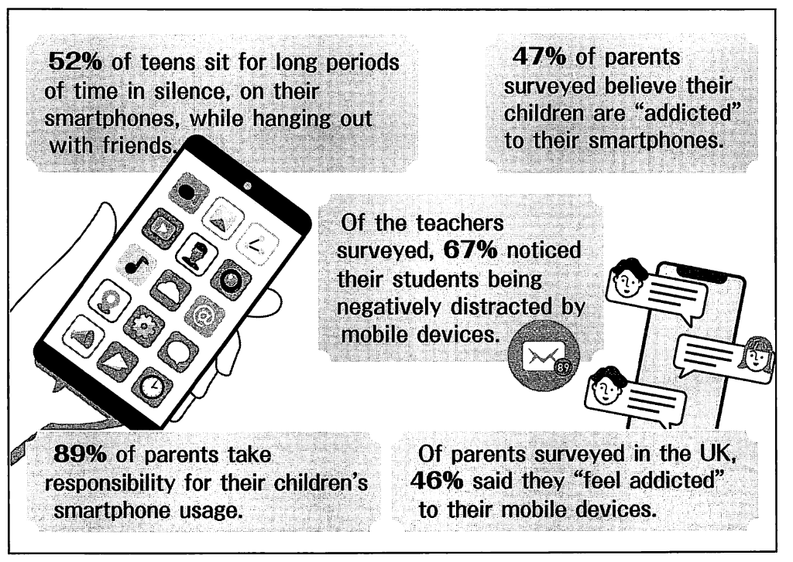

配点 16点
Since the world saw the first iPhone in 2007, smartphone usage has steadily become an accepted part of our daily lives — and the smartphone addiction statistics prove it. Now, in 2022, we are glued to our phones. Because we rely on our phones for communication and connection, it can be hard to determine when excessive smartphone use becomes an addiction. However, it's necessary to know the following statistics:

In fact, I once suffered from sleep deprivation, increased stress levels, depression, and anxiety because of, I believe, my smartphone. And I've stopped using it. While being addicted to your digital devices doesn't negatively impact your health as seriously as other types of addiction, it does indeed impact not only your mental health but your physical wellbeing. Why don't you stop and think about how you use YOUR smartphone?
If there's anything that most deserves the claim to being a man's best friend in the modern age, it has got to be the smartphone. Mobile devices have penetrated every type of human activity. Nearly everyone uses one at home, school, work, and during times of leisure. So much so that not having access to a mobile phone has paved the way for "nomophobia", the fear of being out of mobile phone contact. As such, understanding the current smartphone addiction statistics is important to get a grasp of how serious it really is.
Here, I'd like to shine a light on smartphone usage and habits in school. Given that smartphones are mini-computers, they can take on a wide variety of functions which can be useful in class. This allows users to enjoy their devices in a lot of different ways. Unfortunately, too much enjoyment can be counterproductive. As the smartphone addiction statistics suggest, mobile phones prove to be huge distractions in schools. This causes dips in productivity.
| Percentage | What does the percentage show? |
|---|---|
| 20% | The time spent by students in class texting and checking social media |
| 45% | Students who are constantly online. This includes the time that they are in class. |
| 46% | Parents who want educators to find ways to integrate the use of smartphones into lessons more |
| 49% | Students who are distracted by smartphones and other digital gadgets in class |
| 80% | Schools which have a policy that restricts the use of mobile phones in class |
If you're uncomfortable with your attachment to your smartphone, there are ways to cultivate a healthier relationship with the technology in your life. Try limiting the time spent on your smartphone by using an app that tracks your daily usage and sends reminders to log off. You can also access your average screen time in the settings of your phone. Another trick that helps limit smartphone use is to turn your color settings to black and white. Late night scrolling isn't as stimulating when you're seeing black and white visuals, which encourages putting down your device.
※23に入る選択肢を選んでください